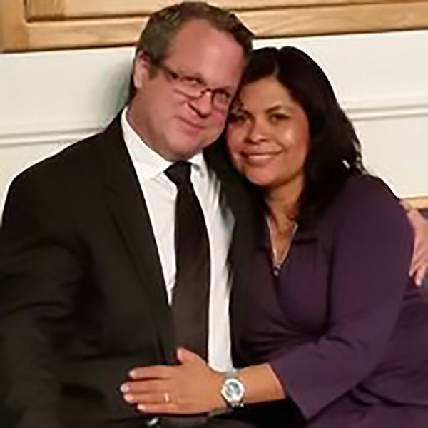

Lead Pastors Henry and Eva Perez

Born and raised in New York City, Pastor Henry came to California in the 1980's called by God to be a leader in Teen Challenge of Southen California. Recently, God has led Pastors Henry and Eva (a lifelong resident of Southern California) to the Central Valley to serve as lead Pastors of Victory Christian Fellowship, Visalia. Under their vibrant and dynamic leadership,we became The Life Church, a growing & thriving community of faith and love in our Lord & Savior, Jesus Christ
Associate Pastors David and Darla Burnett

Pastors David and Darla carry a strength and sense of fun in the Lord which is both empowering and infectious. Spend some time around them and you will realize that they have a strong love and devotion to God and His people. Although only recently ordained as Associate Pastors of The Life Church, they have been serving in a Pastoral capacity for many years. They have been through a great deal of testing and have always stood strong in their faith
Associate Pastors Joseph and Adela Connelly

Pastors Joseph and Adela met in 2006 in a Spanish-speaking congregation and were married on the 7th of July 2007. They have weathered countless storms and along the way learned many lessons about growing together in marriage. Called by God to facilitate a community of believers committed to God and to one another, Pastors Joseph and Adela have a passion to see marriages thrive. In marriage ministry since 2011, they continue to passionately contend for healthy marriges in an atmosphere of love and laughter.